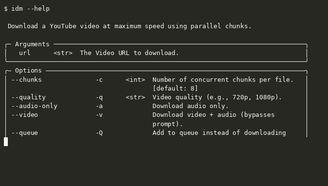

Parallel by design
Split supported files into 1–32 concurrent chunks. Start with 8 and tune it to your connection.
Open source · Python 3.8+
A download manager for your terminal. Split files into parallel chunks, pick up where you left off, and keep your downloads moving.
$ pip install idm-cli

01 / What it does
Small command. Serious download flow.
Split supported files into 1–32 concurrent chunks. Start with 8 and tune it to your connection.
Interrupted? Run the same link again and continue from the saved progress.
Download direct links or use yt-dlp support for video and audio from supported sites.
Add downloads to a queue and process them sequentially when you’re ready.
02 / The flow
IDM-CLI checks the URL, prepares the download, and uses parallel byte ranges when the server supports them. Progress is saved so an interrupted download can continue later.
See how it worksRANGE REQUESTS → ONE FILE
03 / 60-second quickstart
Install IDM-CLI, paste a direct file link, and run it. You need Python 3.8 or newer. Some video formats need FFmpeg for muxing, and MP3 conversion requires it.
$ pip install idm-cli
$ idm "https://httpbin.org/bytes/1024"
04 / Shortcuts
idm "url" -c 16Use 16 parallel chunksidm "url" -aDownload audio as MP3idm "url" -QAdd a download to the queue-q <resolution>1080p.-a-v-Q-c <number>-f <filename>05 / A straight answer
IDM-CLI does not scan downloads for malware. Its URL check blocks specified literal private, loopback, link-local, reserved, and unspecified IP address categories and reserved hostnames, but it does not resolve DNS names or recheck redirect targets, so a redirect may still reach a private address. IDM-CLI avoids shell execution and verifies the checksum when it auto-installs FFmpeg. Keep your operating system’s antivirus enabled.
Read the security notes06 / Good to know
Yes. IDM-CLI supports macOS, Windows, and Linux. Install FFmpeg with Homebrew if you need muxing or MP3 conversion: brew install ffmpeg.
Only when the server supports byte-range requests. If it ignores ranges, IDM-CLI falls back to a single download stream.
README examples include YouTube, Facebook, and Instagram. Supported formats depend on the source; IDM-CLI currently needs direct HTTP(S) media URLs, not HLS or DASH manifests.
Parallel ranges depend on server support. If a server ignores range requests, IDM-CLI automatically uses one stream.
Install FFmpeg and make sure it is available on PATH, or use IDM-CLI’s automatic installer for supported operations.
If Device Guard blocks the executable, run the Python module instead: python -m idm_cli.